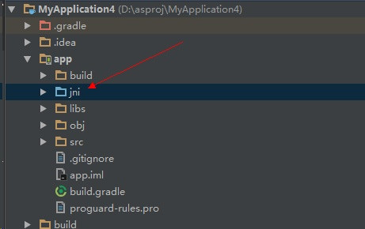
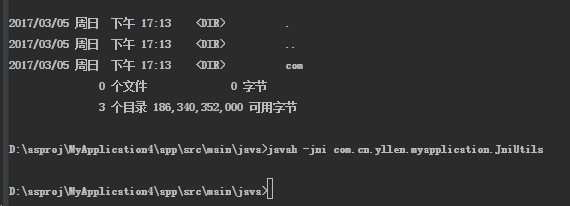
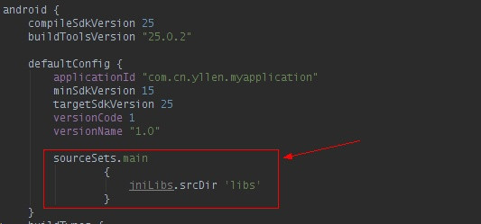

网上有很多LJ教程，耽误时间不说，真能把人气死，废话不说了，开始Android Studio下NDK开发配置。
###1.首先是新建一个android的工程
然后新建一个需要用native声明的jni接口类
在工程视图下，以app为父节点创建名为jni的文件夹

创建JniUtils.java文件，内容如下
public class JniUtils { public native static String getStringFromC(); static { System.loadLibrary("JniMain"); } }
|
主要用来加载so库，并且声明native实现的方法
###2.接着，生成jni头文件，这里使用javah命令。
先将工程命令行切换到当前工程java文件处
输入javah -jni com.cn.yllen.myapplication.JniUtils后回车

在该目录下则可以看到com_cn_yllen_myapplication_JniUtils.h文件(包名+文件名称构成)
内容为
#include <jni.h> #ifndef _Included_com_cn_yllen_myapplication_JniUtils #define _Included_com_cn_yllen_myapplication_JniUtils #ifdef __cplusplus extern "C" { #endif JNIEXPORT jstring JNICALL Java_com_cn_yllen_myapplication_JniUtils_getStringFromC (JNIEnv *, jclass); #ifdef __cplusplus } #endif #endif
|
将其剪切到之前新建的jni文件夹下面，然后新建一个JniUtils.c文件，实现如上方法声明
#include "com_cn_yllen_myapplication_JniUtils.h" jstring JNICALL Java_com_cn_yllen_myapplication_JniUtils_getStringFromC (JNIEnv *env, jclass clazz) { return (*env)->NewStringUTF(env, "from C say Hello"); }
|
###3.使用ndk-build编译so
(需要先下载NDK开发包，然后将其路径设置为系统环境变量path下)
继续新建一个Android.mk文件
内容为
LOCAL_PATH := $(call my-dir) include $(CLEAR_VARS) LOCAL_MODULE := JniMain # 要生成的so文件名称 LOCAL_SRC_FILES := JniUtils.c # 源码 include $(BUILD_SHARED_LIBRARY)
|
之后我们用ndk-build命令来编译so文件
正常情况下是
D:\asproj\MyApplication4\app>ndk-build "Compile thumb : JniMain <= JniUtils.c SharedLibrary : libJniMain.so Install : libJniMain.so => libs/armeabi/libJniMain.so
|
但是有可能是这种情况，
D:\asproj\MyApplication4\app>ndk-build [arm64-v8a] "Compile ": "JniUtils <= JniUtils.c" process_begin: CreateProcess(NULL, E:/mobileSec/tools/android-sdk_r24.3.4-windows/android-sdk-windows/ndk-bundle/build//../toolchains/llvm/prebuilt/windows-x86_ 64/bin/clang.exe -MMD -MP -MF ./obj/local/arm64-v8a/objs/JniUtils/JniUtils.o.d -gcc-toolchain E:/mobileSec/tools/android-sdk_r24.3.4-windows/android-sdk-windows/n dk-bundle/build//../toolchains/aarch64-linux-android-4.9/prebuilt/windows-x86_64 -target aarch64-none-linux-android -ffunction-sections -funwind-tables -fstack- protector-strong -fpic -Wno-invalid-command-line-argument -Wno-unused-command-line-argument -no-canonical-prefixes -g -O2 -DNDEBUG -Ijni -DANDROID -Wa,--noexecs tack -Wformat -Werror=format-security --sysroot E:/mobileSec/tools/android-sdk_r24.3.4-windows/android-sdk-windows/ndk-bundle/build//../platforms/android-21/arc h-arm64 -c jni/JniUtils.c -o ./obj/local/arm64-v8a/objs/JniUtils/JniUtils.o, ...) failed. make (e=2): make: *** [obj/local/arm64-v8a/objs/JniUtils/JniUtils.o] Error 2
|
这种我也不知道什么问题，我尝试的办法就是，找个短点的路径(如D:\test)，将jni文件夹整个复制过去，然后编译，就可以成功，之后，将生成的libs文件夹拷贝过来就行了。
生成libs文件夹下会有
为了让studio能将so一同打包到apk中，需要在build.gradle(app)中如下红框内容的添加：

至此，so的已经可以随着build一同被打包到apk下’libs’文件夹中了，接着就是要对这个native方法的调用了，
###4.使用这个方法
我们新建一个按钮，在点击的同时，将native实现的接口返回值用Toast打印出来，代码如下：
public class MainActivity extends AppCompatActivity { @Override protected void onCreate(Bundle savedInstanceState) { super.onCreate(savedInstanceState); setContentView(R.layout.activity_main); Button button = (Button) findViewById(R.id.button_1); button.setOnClickListener(new View.OnClickListener() { @Override public void onClick(View v) { Toast.makeText(MainActivity.this,JniUtils.getStringFromC(),Toast.LENGTH_SHORT).show(); } }); } }
|
###最后
网上虽然有很多各种hello world教程，但是鱼龙混杂，有些是真的坑。
通过本文的这些总结，希望之后的人不要再走坑。
…. 7456 >m <``